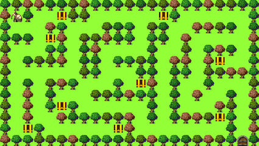
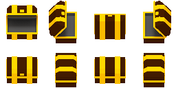
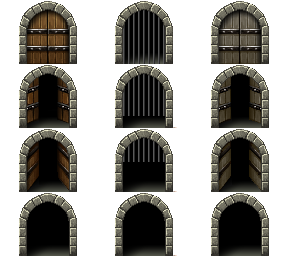
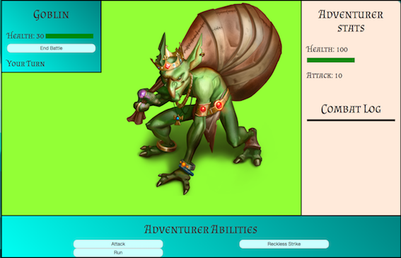

Adventurer! We are in dire need of your help! A group of goblins have attacked our village, we seek the help of a wandering traveller brave enough to deal with them. You will find them scattered throughout the goblin infested forest.
Are you ready to start your journey? Have you read the instructions?
Tip : Keep on eye on you health, that pesky goblin damage hurts after a while.
Instructions
Movement
Move around the map using the arrow keys

Escape
If you wish to restart the level or wish to read the instructions on the home page again, hit the escape key.
If you wish to resume the game hit the escape key again.
Action
To interract with ingame items use the 'F' key. Can be used on both chests and doors
 Combat
When you encounter an enemy a combat screen will appear.
Combat Interface
Combat is turn based. Take the enemies health down to 0 before he takes you down!
Enemy Unit Frame
Enemy health: shows current health of enemy and a healthbar.
Start battle/continue button: Initiates battle and enemy attacks. After the first attack this button turns into a continue button. Will also tell you whose turn it is.
Turn counter: will display if its the user's turn or the enemies turn.
Adventurer Stats
Adventurer health: shows current health and a healthbar. Your maximum health is 100.
Attack: Shows your base attack stat. Your base attack is 10.
Attack multiplier stat: Shows your attack multiplier stat. Your base multiplier is 1x, but this can increase by collecting powerups.
Combat Log
Records every turn and attack during this combat.
Abilities
Shows clickable buttons with all your abilities.
Attack: Basic attack ability. This abilities damage is calculated by attack x attack multiplier
Reckless Strike: Reckless striking ability, that has the chance of doing twice as much damage as a basic attack but also has a chance of completely missing the enemy.
Run: We all know running from battle is not an option for a spartan!